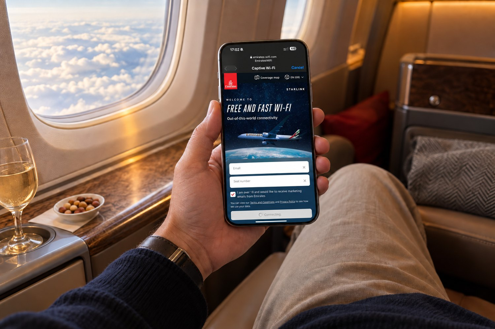
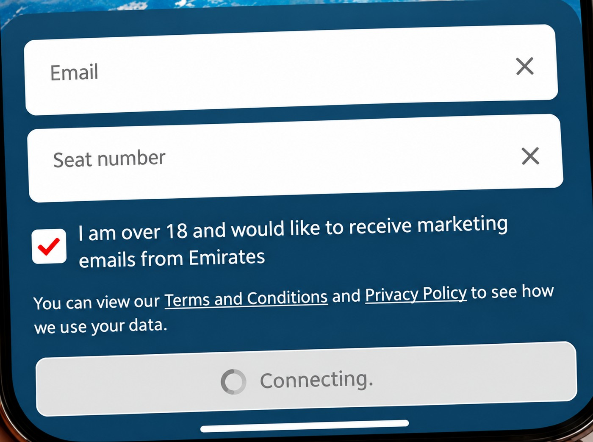
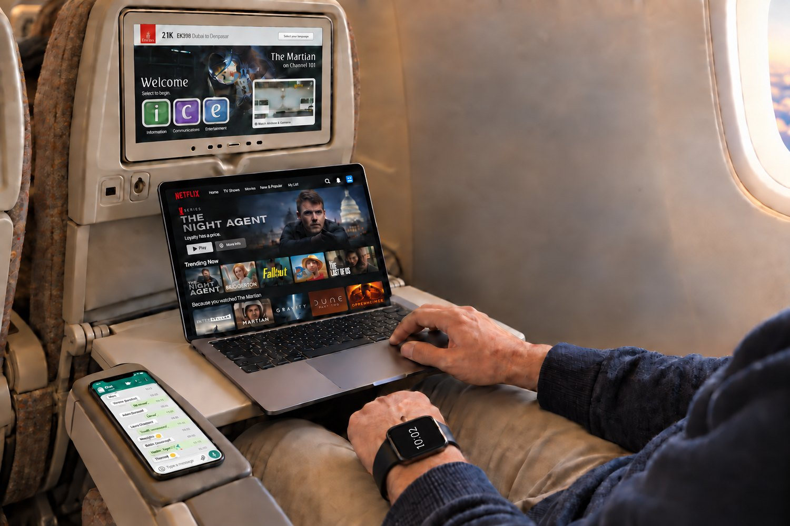
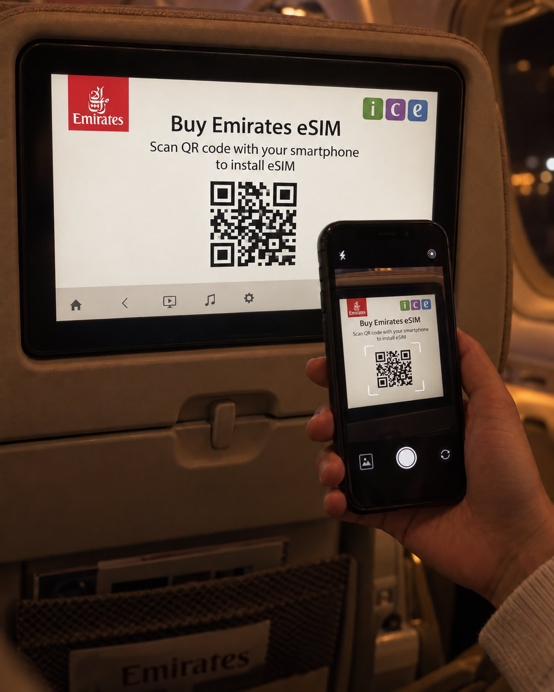

Cabin connectivity strategy/Recommendations for Emirates/September 2026
Emirates bought the best satellite bearer in the world. What a passenger actually experiences is decided in four places downstream of it — the capacity of the pipe, the edges of the map, the radio in the cabin, and the policy layer in between. Three of the four are fixed with software and contracts rather than hardware.
Six findings, each derived from a model or a primary source in the body of this paper. Every number here can be reproduced from the section it belongs to.
The decision to put Starlink on the fleet was correct, and on today's evidence it remains correct. Nothing in this paper argues for unwinding it. What this paper argues is that the bearer was the first decision, not the last one — and that the next four decisions are the ones that determine whether Emirates has the best connectivity product in the sky or merely the best satellite link.
The pipe fills before the fleet does, and it fails upward first. There is no congestion problem on Emirates today — roughly 35 aircraft are fitted, and passengers are largely delighted. But modelling every aircraft type and cabin configuration against the terminals fitted to it, an unmitigated busy sector already sits at the limit on downlink and past it on uplink. The uplink number is the one that matters and the one nobody publishes. Every headline figure in this industry — Starlink's included — is a downlink figure. Four software mitigations bring it back inside the envelope, which is the whole argument of this paper.
Demand is not going to stand still. Two to three years out, 4K streaming, automatic cloud backup of holiday photo and video libraries, and social posting from the seat will push per-passenger demand up substantially. Starlink's answer is the V3 satellite, and its own specification is revealing: downlink improves about tenfold, uplink about twenty-two fold. SpaceX is scaling uplink twice as hard as downlink because uplink is the constraint. But V3 says nothing about aviation, and capturing any of it would mean a new terminal and a second fleet-wide retrofit.
Nearly half the network is outside the licence. Starlink publishes the list of territories where it is authorised for in-motion aviation use. Read against Emirates' own route map: 35 of 76 countries, 65 of 143 destinations, and 42% of the network's great-circle distance lie in airspace that is not on it. Of the land Emirates overflies, roughly two thirds is unauthorised.
A small minority decides everyone's experience. At a realistic traffic mix, 5% of sessions generate about two thirds of all downlink — operating-system updates, cloud sync, bulk downloads. A fair-use ceiling on that minority recovers more capacity than any other single intervention, and no other passenger notices.
The cabin radio is a generation behind the link. The access points inside the satellite terminal are Wi-Fi 5. Current-generation cabin access points reach Wi-Fi 6E and Wi-Fi 7, and the 6 GHz band is legally available in a large aircraft above 10,000 feet under a specific FCC provision. Below that altitude it is not — which is exactly when most passengers first connect.
Nothing is measured, and the contract reflects it. Starlink markets its top aviation tier as "backed by a Service Level Agreement", but publishes no aviation SLA terms — and its own General Aviation conditions state that those plans are not eligible for the one SLA it does publish. That SLA, in any case, measures whether the terminal can reach a ground point of presence, which says nothing about the cabin. Emirates has no independent telemetry and no way to tell a poor sector from a poor aircraft from a poor beam. Instrumentation is not a reporting nicety; it is the precondition for every commercial conversation that follows.
Take control of the layer between the satellite terminal and the passenger. Concretely: an Emirates-controlled router behind the terminal's second Ethernet port, a policy layer that shapes the greedy few and prioritises by cabin class under congestion, a modern cabin Wi-Fi estate, an instrumentation programme that makes the contract enforceable, and a staged option on a second bearer that costs almost nothing to hold open.
The sequencing matters more than the spend. Most of the first year is contract language, specification and measurement — reversible, inexpensive, and a precondition for everything expensive that might follow.
Part II contains three working models rather than illustrations — a fleet capacity model, an authorisation map and a route overlay. Change the assumptions and the conclusions change with them. That is deliberate: the aim is not to win an argument with a chart but to hand over a tool that survives disagreement about its inputs.
Throughout, verified facts are separated from estimates, and estimates are labelled. Section 20 lists everything this paper asserts that has not been confirmed, because a strategy document that cannot say what it does not know is a sales document.
A critique that opens with criticism reads as a pitch. One that opens by arguing the incumbent's case at full strength reads as analysis. So: the case for what Emirates has already done, stated as strongly as it deserves.
What has been built, what it cost in organisational effort, and what it looks like from seat 34K.

Emirates media material · portal as depicted by Emirates, September 2026
Detail — the form below the fold

Emirates committed to fitting Starlink across the widebody fleet and made it free to every passenger in every cabin, with no tiering, no paywall and no loyalty gate. That last decision is easy to underrate. Most carriers that moved to LEO kept a paid tier for at least a year; Emirates removed the transaction entirely, which converts connectivity from an ancillary line into a brand attribute.
The fleet being fitted is not a small one. On the current orderbook the connected widebody fleet moves from roughly 264 aircraft today toward 623 — 116 A380s, 119 777-300ERs, 10 777-200LRs and a growing A350 fleet now, with 235 777-9s, 35 777-8s, 20 787-8s and 15 787-10s to come. Every decision taken about the cabin network today is being taken for a fleet roughly twice the size of the one it is being tested on.
The retrofit itself is a substantial engineering achievement: a supplemental type certificate per airframe type, a radome and terminal on the crown, power and cooling provisioning, cabin access points, and an aircraft out of service for each installation. Doing that at fleet scale, in parallel with a cabin refurbishment programme, is not a procurement exercise. It is an industrial one.
The experience is close to frictionless, and deliberately so. Join the network, the portal appears — Emirates on one side, Starlink on the other, free and fast Wi-Fi across the middle — and the passenger is asked for three things: an email address, a seat number, and a tick in a single box that combines being over 18 with consenting to marketing email. Then the session opens. For a service given away at no charge that is a light ask, and it should stay light.
But it is worth reading that form as an engineer rather than as a marketer, because what it collects and what the network needs are two different things. Both fields are typed by the passenger and verified by nothing. The email is a marketing capture. The seat number — the single field that could tell the network which cabin a device is sitting in — is gathered as free text, at the one moment the passenger is least inclined to be careful, and is attached to a consent flow rather than to the session. And the tick box binds age confirmation to marketing consent in one control, so the two can never afterwards be separated; whether that survives GDPR-style unbundling requirements is a question for counsel, not for this paper.
So the position is not that Emirates learns nothing about its passengers. It is narrower, and for an engineering audience more useful: the front door collects an identity for the marketing database and nothing at all for the network. Nothing visible from outside suggests that what is typed into this form ever reaches the people who would have to explain a bad sector — there is no evident path from this form to a cabin, an access point, a device class or an outcome. Connectivity is still delivered blind. Section 9 shows how the cabin can be known without asking anyone, and section 13 what these two fields would be worth if they were simply joined to the data Emirates already holds.
The LEO transition is now industry-wide rather than a differentiator in itself. United, Qatar Airways, Air France, WestJet, airBaltic, Alaska, Hawaiian, ZIPAIR, British Airways, Air New Zealand and others are flying it; American has announced 500-plus aircraft and Lufthansa Group some 850 across eight carriers through 2029. JetBlue and Delta have committed to a different constellation entirely.
Within about three years, free fast Wi-Fi will be table stakes on every premium long-haul carrier. The differentiator will not be having it. It will be what the airline does with the layer above it — which is the subject of this paper.
Stated at full strength, because the rest of this paper depends on the reader accepting that the incumbent is genuinely excellent.
Starlink has roughly 9,713 working satellites of 11,133 in orbit. Every other broadband constellation in the sky — OneWeb, Amazon Leo, the two Chinese constellations, O3b mPOWER, the rest — adds up to about 1,520. That is a ratio near six to one against the entire rest of the world combined, and it was earned with a launch cadence no one else has come close to matching.
Scale alone would not settle it. Three properties do:
Free, fast, gate-to-gate connectivity is a brand asset that can be advertised, and the retrofit programme is visible proof that the airline moved before its peers rather than after them. In a market where the product is otherwise converging — flat beds, similar seats, similar catering — a visible technology lead has disproportionate value.
It does not recommend replacing Starlink. There is no candidate that could carry this fleet today, and on published schedules there will not be a fully equivalent one before the end of the decade.
What it says is narrower and, I think, more useful: the bearer decision has been made well, and the four decisions that follow it have not yet been made at all. Those four decide whether the investment already committed produces a genuinely differentiated product or an expensive parity one.
The rest of this paper is about those four.
Emirates bought the best bearer available, on the best commercial terms available at the time, and deployed it faster than most of its peers. The question this paper asks is not whether that was right. It is what has to be true in 2030 for it to still look right.
Four constraints, each evidenced rather than asserted. Three of them are measurable today and are not being measured. The models in this part are live — change the assumptions and the conclusions move with them.
Every aircraft type and cabin configuration in the fleet, the terminals fitted to each, the devices and crew aboard, and the traffic they offer — against what the link can carry.
Emirates does not have a congestion problem today, and this section does not say it does. There are no credible reports of the cabin network failing under load on an Emirates aircraft, and the passenger commentary that exists is, on the whole, delighted. That is the honest starting position.
It is also a position built on a small sample. On my own reading of the programme, roughly 35 aircraft of a fleet heading toward 623 are flying with Starlink at the time of writing — Emirates does not publish a running fitment count, so treat that as an industry estimate rather than a disclosed figure. Take-up rises as the fitment spreads and as passengers learn to expect it; the traffic each connected passenger offers rises independently of that, for the reasons set out later in this section. Those two curves multiply.
So this model is a forecast, not a diagnosis. It exists to answer one question — at what point does this become a problem, and which direction does it break first? — early enough that the answer is still cheap to act on. The finding is that the binding constraint, when it arrives, is uplink, and that it arrives well before downlink runs out. Everything downstream of this section follows from that.
The same bearer, on aircraft that have been flying it longer or carrying it on denser sectors. These are passenger accounts, not measurements — but they are the only public evidence there is of what a Starlink cabin looks like when it is not going well.
A passenger described the service as "maddening", saying it kept disconnecting and timing out for the whole of the previous day's flight.
Wi-Fi was fast, but micro-stuttering every few minutes made it impossible to stream for more than a minute or two. Browsing and social media were fine. A second passenger on the same flight reported roughly ten-second interruptions every 10–15 minutes.
Starlink was advertised on the aircraft, but passengers were told on board that it was not working. The same traveller recorded 184 Mbps down on the return sector — so this is an availability complaint, not a capacity one.
A passenger could not reach the internet at all on both equipped flights. Later replies in the thread suggest disabling a VPN resolved similar cases — an access-path problem rather than a satellite-link failure.
The mean bitrate per active session is the most contestable number in any capacity model, so it is built up class by class rather than asserted. Rates are sustained means over a session, not peak burst rates.
| Traffic class | Share of sessions |
Mbps down per session |
Mbps up per session |
Share of total downlink |
Share of total uplink |
What it is |
|---|
Devices aboard, active sessions and offered load are computed per cabin configuration. Capacity is terminals × per-terminal rate × beam availability. Crew are counted separately and added.
These figures update from the assumptions and mitigations selected above. Mitigations change traffic rates and downlink/uplink load; seats, aircraft counts and associated devices remain the same.
| Aircraft / configuration | Seats | Units in service now → with orders |
Term- inals |
Devices aboard |
Active sessions |
Downlink | Uplink | Binding constraint |
|---|
The Starlink Performance Kit is quoted at 1 Gbps down against 100 Mbps up. Emirates' own figure of more than 2 Gbps across three A380 terminals implies a working downlink nearer 667 Mbps per terminal, which is the default used here. Either way the link is asymmetric by seven to one or more.
A cabin full of people is not. Messaging is close to symmetric. Video calls are symmetric by definition. Photo and cloud backup is almost pure uplink. The offered traffic ratio lands near three to one.
Offered traffic is far less asymmetric than the link carrying it. Uplink utilisation therefore climbs about twice as fast as downlink and goes past capacity while downlink is still merely at its limit. Every performance figure published by anyone in this market is a downlink figure. The constraint nobody quotes is the one that binds.
A small minority running sustained greedy transfers — operating-system updates, torrents, bulk downloads, unattended cloud sync — generate a wildly disproportionate share of load. At the defaults, 5% of sessions produce around two thirds of all downlink and roughly half the uplink.
This is not an aviation finding, and it is not modelled optimism. The same shape turns up in every shared access network I have worked on or seen measured: fixed broadband, mobile data, hotel and airport Wi-Fi, campus networks, municipal hotspots. The exact numbers move — a few per cent of subscribers carrying somewhere between half and three quarters of the bytes — but the shape does not. It is one of the most stable empirical regularities in telecommunications, and any operator's traffic team will recognise it on sight. An aircraft is simply the smallest and most contended access network any of us will ever use, which makes the effect sharper, not different.
And the model understates them. Greedy flows have no natural rate: they expand to fill whatever is available, which is exactly why they are so destructive on a shared link. Modelling them at a fixed bitrate is a convenience. In an unmanaged network they take everything that is not actively defended.
Which is why the single most valuable control is not more bandwidth. It is a fair-use ceiling that bounds the top few per cent — invisible to everyone else, and recovering more capacity than any other intervention available. Turn on "shape heavy users" above and watch both meters move.
The per-terminal figures are ceilings under favourable conditions, not floors. Starlink's own terms state quoted speeds are maxima, are not guaranteed, and slow under congestion — and the beam is shared with ground users and other aircraft in the same cell.
Neither published in-flight measurement study reports aircraft-aggregate throughput; both measured single devices on lightly-loaded aircraft. The fraction of nominal capacity actually delivered to an Emirates aircraft over the Gulf at 20:00 local is unknown, unmeasured, and the largest single uncertainty in this model. Leave the slider at 100% and downlink sits on the line. Set it to half — entirely plausible over a busy region — and every widebody in the fleet is oversubscribed in both directions at once.
Every number above describes today's traffic mix. It will not hold. Three things are arriving at once over the next two to three years: 4K streaming becoming the default rather than the exception on phones and tablets; automatic cloud backup of photo and video libraries, which is pure uplink and which passengers do not know is running; and social posting from the seat, increasingly video. None of these are speculative. All three are already normal behaviour on the ground and are suppressed in the air only by the network being too poor to attempt them. Make the network good and the demand appears.
Starlink's answer is the V3 satellite, and its published specification makes the point of this section for us. Per satellite, V3 supports 1 Tbps of downlink — about ten times V2 — and 160 Gbps of uplink, about twenty-two times V2, with 2,048 beams each way against 192 down and 144 up, six 400 Gbps optical links, and roughly twenty times the capacity per launch. SpaceX is scaling uplink more than twice as hard as downlink. The constraint identified here from inside the cabin is the same one they are solving in orbit.
Three caveats belong on that, and they are load-bearing. Constellation capacity is not per-aircraft capacity — an aircraft is limited by its terminal and its beam allocation, not by the total in orbit. SpaceX has not announced aviation support for V3; the published material describes satellites, not terminals or service plans. And capturing any of it would require a new aviation terminal and a second fleet-wide retrofit — on 264 aircraft today, and on a fleet heading toward 623. That is a programme, not an upgrade, and it should be planned for now rather than discovered later.
Enable them one at a time. Shaping heavy users produces the largest single recovery in both directions and affects a tiny minority of passengers. Background suppression is the biggest uplink-specific win, and it removes traffic no passenger asked for and none will notice losing — a photo library that syncs on the airbridge instead of at 38,000 feet costs its owner nothing. Caching moves downlink substantially and uplink not at all — enormously valuable for cost and latency, but it does not touch the binding constraint.
Cache solves downlink, policy solves uplink, and neither substitutes for the other. Switch all four on and the busy-sector case lands comfortably inside the envelope in both directions — which is the point worth taking from this section. The constraint is real and it is approaching, but it is a software problem before it is a hardware one, and the tools that solve it are neither exotic nor expensive.
Not a measurement. Every input is an assumption; it is a framework for reasoning and testing sensitivity, not evidence about any aircraft flying today. Not a queueing model — it compares mean offered load to mean capacity, and real networks fail on bursts and tail latency well before mean utilisation reaches 100%, so the true onset of poor experience is earlier than shown, not later. Not phase-aware — climb, descent and taxi are worse than any figure here. And silent on the Wi-Fi hop, which section 5 addresses and which may be the real constraint.
Starlink publishes the list of territories where it holds regulatory approval for in-motion aviation service. Read against Emirates' own route network, it is the most consequential single fact in this paper.
Drag the globe to rotate it
Emirates flies to roughly 143 destinations in 76 countries. 35 countries — 65 destinations — are not on the authorisation list. That is 45% of the network, and it is not a tail of minor stations:
The Gulf itself is split down the middle: the UAE, Oman and Jordan are authorised; Saudi Arabia, Bahrain, Kuwait, Iraq and Lebanon are not.
Counting destinations understates it, because a destination is a point and a flight is a line. Measured across all 142 routes:
And it inverts the usual intuition about which flights are exposed. The China group runs 96–98% of route distance unserved end to end. Dubai–London is 46% and Dubai–Paris 51% — not because Europe is unauthorised but because the first half of the sector crosses Iran, Iraq, Türkiye and the Gulf states before reaching approved airspace. Meanwhile Dubai–Sydney is 4% and New York 20%, because most of those sectors are over open ocean.
The ultra-long-haul flights, where connectivity matters most to the passenger, are the best served. The exposure is concentrated in the four-to-seven-hour Asian sectors — which are also the fullest aircraft in the fleet.
| Route | IATA | Distance | Share of route distance over unauthorised airspace |
|---|
Unauthorised airspace is not distributed evenly across a flight. It is concentrated at the ends — over the destination during descent and approach, over the origin during climb. That is precisely the window in which most passengers first open the portal, and precisely the window section 5 identifies as already degraded: below 17,000 feet the uplink is measurably worse, and below 10,000 feet the 6 GHz band is not legally available in the cabin.
On 65 of 143 destinations, the passenger's first and last impression of the product is formed in the one phase where three constraints stack at once.
The satellite link is the part everyone measures. The Wi-Fi hop between the access point and the passenger's phone is the part nobody measures, and it is a generation behind.
The Starlink aviation installation includes its own wireless access points. They are Wi-Fi 5 class — 802.11ac, 2.4 and 5 GHz only. That was a reasonable choice when the kit was designed and it is no longer the state of the art.
Purpose-built cabin wireless access points now reach Wi-Fi 6E with tri-radio designs supporting 2.4, 5 and 6 GHz, several hundred clients per radio, and integrated Bluetooth Low Energy and Zigbee radios. At least one is a Wi-Fi 7 design offering multi-gigabit throughput in the 6 GHz band, qualified to DO-160G with an integrated layer 2–7 firewall.
This matters more on a full A380 than anywhere on the ground. Between 660 and 850 devices associate to the cabin network on a busy sector by the model in section 3. That is a density no home or office deployment ever sees, inside an aluminium tube that reflects everything, with metallised windows, seat-back screens, galley equipment and several hundred human bodies absorbing 2.4 and 5 GHz energy.
Capacity in a dense wireless environment comes from clean channels, not from raw radio speed. The 2.4 GHz band offers three non-overlapping 20 MHz channels and is saturated by every Bluetooth device in the cabin. The 5 GHz band is better, but usable spectrum there is narrower in an aircraft than it looks — see the DFS problem opposite. The 6 GHz band is the only place where wide, clean, uncontended channels exist, and it is the reason a modern cabin AP outperforms a Wi-Fi 5 one by far more than the specification sheets suggest.
This is not a static picture, and the change is being driven by Emirates' own cabin programme rather than by passengers. The retrofit fleet and the new deliveries are being fitted with seatback systems that pair the passenger's own Bluetooth headphones directly to the screen — Panasonic's platform on the retrofitted A380s and 777s, Thales AVANT Up on the A350, with the next-generation 4K units following from late 2026. The retrofit programme alone covers 219 aircraft, around a hundred of them already redelivered.
Consider what that does to the 2.4 GHz noise floor. Today a minority of passengers run a Bluetooth link between their own phone and their own earbuds. Tomorrow every seat is a Bluetooth transmitter by design, and the airline is actively encouraging passengers to use it, because it removes a wired headset from the service flow. On a three-class A380 that is a potential 500-plus simultaneous Bluetooth links in a tube seventy metres long, each hopping across the same 79 channels that the Wi-Fi is trying to use, each within a metre or two of the device it is interfering with.
The usual reassurance at this point is adaptive frequency hopping — Bluetooth senses which channels Wi-Fi is using and hops around them. Figure 7 shows why that reassurance fails in a cabin. Bluetooth has 79 channels of one megahertz; three non-overlapping Wi-Fi channels cover 68 of them, leaving eleven clear. And the Bluetooth specification does not permit a hop set below twenty channels. Eleven is less than twenty, so AFH is not merely reluctant to avoid Wi-Fi — it is forbidden from doing so. At least nine of its hop channels must sit inside a Wi-Fi carrier, by rule, every second of the flight.
The second panel is the part that has no mitigation at all. AFH coordinates Bluetooth against Wi-Fi. Nothing coordinates Bluetooth against other Bluetooth: every pairing hops on its own pseudo-random sequence, blind to the other five hundred. The collision curve is simple birthday arithmetic and it saturates long before the cabin is full.
Bluetooth and Wi-Fi coexist adequately when Bluetooth is sparse. At seat-density they do not. The practical consequence is that 2.4 GHz should be written off as a passenger data band — kept for legacy devices that have nothing else, and otherwise conceded. Which leaves exactly two bands to carry the cabin:
Both of the remaining bands are half-available, and the airline is in the process of removing the third one itself. That is the case for treating the cabin radio estate as a designed system rather than a shopping list — and for doing the RF survey before the next tranche of aircraft is specified, not after.
US rules on unlicensed 6 GHz operation aboard aircraft are set by 47 CFR §15.407(d)(1)(iv). The operative text:
"Standard power access points, fixed client devices, geofenced variable power access points, very low power devices, and low-power indoor access points in the 5.925–7.125 GHz band are prohibited from operating on aircraft, except that very low power devices and low-power indoor access points are permitted to operate in the 5.925–6.425 GHz bands in large aircraft while flying above 10,000 feet."
Three consequences follow, and all three are design constraints rather than footnotes:
The regulation does not define "large aircraft" in this section — a point worth confirming with counsel before it is relied upon in a certification submission. The rule cited is the FCC's; EASA and the UAE's TDRA positions should be confirmed separately and are not assumed here.
The 5 GHz band is not one band but four sub-bands with different rules, and in an aircraft two of them are effectively unusable.
U-NII-2A (5.250–5.350 GHz) and U-NII-2C (5.470–5.725 GHz) — together the majority of 5 GHz spectrum — require Dynamic Frequency Selection. The device must listen for radar, and on detecting a signal at or above the threshold (−64 dBm, or −62 dBm for lower-power devices) it must cease transmission within 10 seconds and vacate the channel. Before using such a channel at all it must first complete a channel availability check.
Those same sub-bands also require Transmit Power Control: the device must be capable of operating at least 6 dB below the mean EIRP of 30 dBm. A 6 dB reduction is a factor of four in radiated power — which, in a metal tube where coverage is already marginal at the seat, is not a trivial concession.
An aircraft is the worst possible environment for DFS. It is surrounded by radar — its own weather radar, radar altimeters, and ground-based primary and terminal radar as it descends through the busiest airspace in the world. A false detection costs the channel for thirty minutes. The practical consequence is that cabin deployments tend to avoid the DFS sub-bands, which leaves U-NII-1 (5.150–5.250) and U-NII-3 (5.725–5.850) — a fraction of the band, shared among several hundred devices.
DFS and TPC requirements above are quoted from §15.407. That cabin vendors disable DFS channels in flight is widely reported practice rather than a published rule, and should be confirmed with the equipment supplier rather than assumed.
No published study has ever measured the Wi-Fi hop in flight. Both of the peer-reviewed in-flight measurement papers on LEO connectivity measured a single device on a lightly-loaded aircraft; neither instrumented the cabin network. So the industry has no public evidence on whether the satellite link or the cabin radio is the binding constraint on a full aircraft. That is an extraordinary hole, and it is cheap to fill.
The first three constraints are physical. This one is structural, and it is the reason the other three persist.
There is no policy layer. Traffic on the aircraft is unmanaged. Every session competes equally with every other, which sounds fair and is not: it means the passenger checking a boarding pass competes on equal terms with a laptop downloading an operating-system update, and loses. There is no fair-use ceiling, no background-traffic suppression, no differentiation by cabin, and no protection for the interactive traffic that passengers actually notice.
There is no telemetry. Emirates cannot currently answer: how did connectivity perform on EK203 yesterday? Which aircraft are the worst performers? Did the Mumbai sector degrade over Pakistani airspace? Is tail A6-EOK's cabin Wi-Fi underperforming its sister ship? These are ordinary network-operations questions and none of them can be answered today.
The service level agreement is declared but not documented. Starlink markets its top aviation tier as "backed by a Service Level Agreement", but the only SLA it actually publishes is the Priority Plan SLA — and Starlink's own General Aviation Terms of Service state in terms that "The General Aviation Plans are not eligible for the Priority Plan Service Level Agreement." No aviation-specific SLA terms appear anywhere on the site. Section 11 takes this apart properly; the point here is that the commitment a fleet of 623 aircraft would be relying on is, in public, a single asterisked sentence.
There is one bearer and one roadmap. The airline inherits the vendor's hardware generation, upgrade timetable and licensing position. When the July 2026 list price for global unlimited service doubled, there was no second quote to negotiate against.
Notice that constraints one, two and three are all made worse by constraint four, and that fixing four is a precondition for fixing the others:
This is why Part III begins where it does. The first recommendation is not a bigger pipe, a second satellite or a new access point. It is a box Emirates owns, in the path, between the terminal and the cabin — because that box is what makes every subsequent improvement a configuration change rather than a procurement.
The Starlink aviation terminal presents two Ethernet ports. One feeds the supplied wireless access points. The second is available. Everything in Part III hangs off that port, and none of it requires Starlink's cooperation, a contract renegotiation, or a change to the terminal.
That is an unusually cheap place to stand.
Capacity is owned jointly with the bearer and is mitigated by policy. Coverage is owned entirely by the bearer and is mitigated only by a second one. The cabin is owned entirely by Emirates today and is the cheapest to fix. Control is owned entirely by Emirates and is the precondition for the rest. Three of the four are inside the airline's own decision-making. That is the good news in this paper.
The answer, ordered from the single decision everything else depends on, outward. One structural change makes the remaining four cheap; without it, each of them is a separate programme.
One box, in the path, under Emirates' control. Everything else in this paper is a configuration change on it.
Because it is the only one that is irreversible if got wrong and nearly free if got right. A router specified today with two WAN ports, an open policy API and an exportable telemetry stream costs essentially the same as one without them. Specify it without them and adding a second bearer in 2029 stops being a software change and becomes an industrial programme: several hundred aircraft through the hangar, a fresh certification basis, and engineering hours measured in the hundreds of thousands. The difference between those two futures is a line in a specification written this year.
It also changes what every later conversation is about. With the box in place, "can we prioritise Business class?" is a policy question. "Can we cache Netflix?" is a capacity question. "Is Starlink meeting its commitments?" is a data question. Without it, all three are procurement questions with a twelve-month lead time.
Inserting equipment into the path between a certified terminal and the cabin is not trivial. It needs an STC amendment, it consumes power and space, it adds weight, and it introduces a failure point that must fail open. None of that is a reason not to do it; all of it is a reason to do it once, deliberately, at the front of the programme rather than in three uncoordinated increments.
The cheapest constraint to fix, entirely within Emirates' control, and the one with the clearest line to something a passenger can feel.
Replace or supplement the terminal's Wi-Fi 5 access points with a purpose-built cabin estate. The specification that matters:
Placement should follow an RF survey of a loaded cabin, not a symmetric layout. On a twin-aisle the difference between crown and seat-level signal is substantial, and between empty and full is larger still.
Dedicated WLAN sensors measure what an access point structurally cannot: the network as a client at a seat experiences it. Association time, DHCP time, DNS time, portal load time, throughput and retry rate — continuously, in flight, per cabin zone.
A handful of sensors per aircraft on a sub-fleet, correlated with the satellite-side telemetry from section 11, would settle the question the whole industry is currently guessing at: on a full aircraft, is the constraint the satellite link or the cabin radio? Nobody has published an answer. Emirates could have one in a quarter.
Modern cabin access points ship with Bluetooth Low Energy and Zigbee radios already fitted and certified. Using them requires no new hardware, no new STC and no new radome — only battery-powered tags and software.
This is the one intervention in this paper with a direct operational return rather than an experience return, and it runs on radios the airline has already bought.
Crew location tracking touches employment and privacy considerations and should be designed with the relevant staff representatives from the start, scoped to on-duty periods and to the aircraft. Treated as a safety and service tool it is defensible; treated as a monitoring tool it will not survive contact with the workforce, and should not.
What the router does with the traffic. This is where the capacity model's mitigations stop being toggles in a web page and become the product.
1 — A fair-use ceiling on the greedy few. The model says roughly 5% of sessions take two thirds of downlink. A per-session ceiling that engages only under congestion, bounding sustained bulk transfers while leaving interactive traffic untouched, is the single highest-value control available. Nobody except the 5% notices, and they notice only that a download is slower.
2 — Background suppression. Automatic photo and cloud backup is almost pure uplink, runs unattended, and no passenger has ever asked for it to run at 38,000 feet. Deferring it — not blocking it, deferring it — is the largest uplink-specific recovery available, and it removes traffic the passenger does not know exists.
3 — Protecting what is noticed. Messaging, page loads, boarding passes, maps and video calls are what passengers judge the network by. Giving them scheduling priority over bulk transfer costs the bulk transfer a few seconds and changes the perceived quality of the whole cabin.
It is not blocking. It is not throttling by application or by site. It is not inspecting content. The classification needed here operates on flow behaviour and works perfectly well on encrypted traffic, which is now essentially all traffic. Any design that depends on seeing inside the payload is both unnecessary and unacceptable, and should be rejected on both grounds.
Emirates already differentiates every other element of the product by cabin. Connectivity is the one that does not — every session on the aircraft is treated identically, which means a First Class passenger and a torrent get the same scheduler.
The right design is narrow and specific:
Applying cabin-based policy requires knowing which cabin a device is in. The portal does ask for a seat number, but a field typed by a passenger at the moment they want the internet to start is not a control input: it is optional in practice, unverified, easy to mistype, and absent for every additional device the same passenger connects. Policy cannot be driven from it.
The answer is not a heavier login either. It is topology: access points are physically located in cabin zones, so the AP a device associates with is a good proxy for where that passenger is sitting. Combined with the seat map for the flight, that gives cabin-level policy with no additional identity capture, no login, and no change to the passenger experience whatsoever. It is approximate at cabin boundaries, and that is acceptable for a scheduling weight. Where the typed seat number is useful is as a cross-check — reconciled after the flight against the manifest, it tells you how good the topology inference was, which is exactly the kind of thing section 11's instrumentation should be measuring anyway.
Content that never crosses the satellite link is content that costs nothing and arrives instantly. Three interventions, in descending order of certainty.
Every connection begins with a name lookup. Today each one crosses the satellite link and back. On a LEO link that is 40–80 ms per lookup, and a single modern web page may trigger dozens across multiple domains.
A resolver on the aircraft router with a warm cache removes most of that latency for repeated lookups, and the cache warms within minutes of a cabin connecting. This is close to free, needs no partner, no commercial negotiation and no content rights — and it is measurable from the first flight. It belongs in the first release of the router configuration — which is why this paper treats the box and what runs on it as a single initiative, Policy, Shaping and DNS, rather than as a hardware project with software bolted on later.
Video is the largest single consumer of downlink, and streaming demand is concentrated: a small fraction of any catalogue accounts for the large majority of views. In principle, prepositioning that fraction on the aircraft removes it from the satellite link entirely.
The mechanisms exist. Specialist aviation edge-CDN vendors do exactly this, and at least one holds a patent describing the operation of major streaming and search providers' own caching appliances aboard an aircraft.
To be precise about what is being cached here, because it is easily confused. This is not about ice. The seatback library already lives on the aircraft and crosses no satellite link at all. What this section addresses is the content passengers pull onto their own phones, tablets and laptops over the cabin Wi-Fi — streaming services, app stores, software updates, and the video embedded in every social feed. That traffic is the downlink load modelled in section 3, and it is the only traffic an onboard cache can touch.
The first-party case that needs no negotiation at all is narrower: the portal, destination content and the Emirates app's own payloads, which the airline owns outright.
Third-party content is where it becomes genuinely hard, and the paper should say so rather than assume it away.
And one thing caching does not do, which matters given everything above: it moves downlink and does nothing at all for uplink. It is valuable, and it is not the answer to the binding constraint.
Emirates' own digital properties — the app, emirates.com, check-in, the portal, ice content delivery — are hosted in known cloud regions. Traffic to them currently takes the public path from a Starlink gateway wherever it happens to egress.
Two improvements follow. Direct peering between the bearer and the cloud regions where Emirates hosts shortens that path and makes its performance predictable rather than incidental — the airline's own properties should be the fastest thing on the aircraft, and today they are not. Private interconnect for operational, crew and aircraft data provides a path that never touches the public internet, which is the appropriate posture for that traffic class regardless of performance.
And there is measured evidence that this matters more than it sounds. The only published in-flight Starlink measurement study — Ullah and colleagues at VTT Finland and the University of Pisa, August 2025 — traced the path from a passenger laptop and found the round trip is dominated not by the satellite hop but by how far the aircraft is from whichever ground station Starlink happens to be using. Over the Baltic, served by a gateway in Frankfurt at a median 562 km, they measured a median RTT of 23 ms. Over the Pacific, served by Tokyo at a median 2,450 km, the same setup measured 62 ms, rising to 86 ms at 4,900 km. The physics accounts for very little of that: service link and feeder link together contribute a median of just 6.62 ms. The rest is inter-satellite routing, queueing and the terrestrial path — in other words, the part that peering and gateway placement determine.
And there is a specific, checkable gap here. Starlink's own PeeringDB record (AS14593) lists 143 internet-exchange presences worldwide and not one of them in the UAE. Its only Middle East exchange presence is QIX in Doha; its declared private facilities in the region are in Doha and Muscat. UAE-IX in Dubai — the largest exchange in the Middle East, run by DE-CIX and established with du and the regulator — does not list them. So traffic from an Emirates aircraft over Emirates' own hub is, on the bearer's own published record, not landing on a UAE fabric. Starlink's declared peering policy is open, with no ratio and no contract requirement, which makes this a matter of deployment rather than of willingness.
My own read of where this goes next — and I flag it as my read rather than as a published fact — is that it changes shortly: I expect Starlink to land traffic at Fujairah, the Gulf's principal cable-landing hub, and to follow it with a point of presence in the UAE. The regulatory precondition is already in place; the TDRA granted Starlink a ten-year general space services licence in August 2026 that names the aviation sector explicitly. If that lands, the case for peering locally stops being theoretical and becomes a short commercial conversation with a counterparty that is already open to it.
The action is the same either way, and it costs nothing today: ask the question now, and make sure the router in section 7 is able to use the answer when it comes.
The section that converts every assertion in Part II into a measurement, and every measurement into commercial leverage.
1 — The bearer. An agent on the Emirates router measuring the satellite link continuously: throughput both directions, latency, loss, jitter, path, and the identity of the ground egress. Per flight, per phase, per region. This is what answers the question section 4 cannot: does service actually drop over unauthorised airspace, where, at what altitude, and for how long?
2 — The cabin. WLAN sensors at seat level, as described in section 8, measuring what a client experiences rather than what an access point reports.
3 — The device. A lightweight measurement component embedded in the Emirates app, active in the background only when the app is open and the device is on the aircraft network. It measures the one thing nothing else can: the experience on the passenger's actual handset, with their actual device, in their actual seat. The payload is kilobytes, not megabytes.
4 — The service. Synthetic tests from the aircraft against the destinations that matter — Emirates' own properties first, then the handful of services passengers actually use — so degradation is attributed to the right hop rather than argued about.
On the app component: it should be disclosed once, clearly, in the privacy notice and in the app's own settings, and silent thereafter. That is the normal standard for diagnostic telemetry and the only one that survives a regulator, an app-store review or a journalist. "Passive and disclosed" is the correct description; anything that relies on the passenger not knowing is both wrong and fragile.
The obvious use is engineering: find the bad aircraft, the bad sector, the bad access point. That alone justifies it.
The larger use is commercial, and it turns on exactly what the supplier has and has not committed to. That deserves stating carefully, because it is easy to get wrong in both directions.
An SLA is declared. No aviation SLA is published. Starlink's aviation page markets the top tier — Aviation Global Unlimited — as "Backed by a Service Level Agreement (SLA)", with an asterisk resolving to "Terms and conditions apply" and a link to nothing. The two cheaper aviation tiers carry no such claim. Meanwhile the only SLA document Starlink publishes anywhere is the Priority Plan SLA, and its own General Aviation Terms of Service say plainly: "The General Aviation Plans are not eligible for the Priority Plan Service Level Agreement." Aviation does not appear in the Service Plan Descriptions that define that SLA's scope either. Whatever terms exist for a fleet customer are in a negotiated contract, not in public.
And the published SLA, if it were the template, would not measure the thing Emirates cares about. It commits to 99.9% network availability, measured as whether the terminal can reach a Starlink point of presence, checked once a second, counted only after 60 continuous seconds of failure. The remedy is a credit of 20% of one month's line fee, it is the "sole and exclusive remedy", Starlink determines violations "in its sole discretion", and an undetected outage must be disputed within 14 days with UTC timestamps the airline has no way of producing. There is no committed throughput and no committed latency at any aviation tier — only "up to" and "as low as" figures that Starlink states are "not guaranteed".
Read that as an engineer and the gap is obvious. Terminal-to-PoP availability says nothing about the cabin. A sector in which every passenger had an unusable experience — congested beam, saturated uplink, failing access points — is a fully compliant sector under that metric. So the three questions worth putting to the supplier in writing are not "is there an SLA?" but:
Emirates cannot answer the third question today, because it has no independent data. That is the real gap, and it is the one the airline can close by itself, without asking anyone's permission:
This is the standard position of any serious enterprise buyer of network services, and it is entirely normal. It is simply not yet the position of any airline buying satellite connectivity.
Instrumentation costs a fraction of any other item here. It is reversible, needs no supplier consent, produces value from the first flight, and is the precondition for the capacity case, the coverage case, the caching business case, the cabin Wi-Fi case and the commercial negotiation. If only one thing in this paper is done, it should be this one — and it should start on a sub-fleet next quarter rather than waiting for the architecture around it.
Everything so far is engineering. This part is what the engineering is for — and where a connectivity programme stops being a cost line and starts being a revenue one.
Four services at one seat, at the same time, without the passenger configuring anything.

Emirates media material
1 — Bring-your-own-device Wi-Fi, which exists today and which the rest of this paper is about making consistently good.
2 — Reachability on the passenger's own number. Emirates was the first airline in the world to offer onboard mobile service, in March 2008, and the capability is still fitted to much of the fleet. It has been quietly overtaken by messaging apps over Wi-Fi — but the underlying proposition, your phone works, on your number, without you doing anything, is stronger than any app. Modern Wi-Fi calling makes it deliverable again without the passenger touching a setting.
3 — A destination mobile connectivity product, sold before or during the flight and working the moment the aircraft door opens — and, done properly, working before it opens. This is section 13.
4 — ice, running alongside rather than against. The seatback system holds its content on the aircraft, so it consumes effectively no satellite capacity at all — the exceptions being the live television feeds and the live flight-schedule and moving-map updates, which are small and predictable. Every hour a passenger spends watching ice is an hour of satellite capacity released to everyone else. That is worth stating internally as a network fact and not only as an entertainment one: the strongest capacity mitigation Emirates owns is the seatback system it already has.
Individually, each of these is available somewhere. Together, and configured so the passenger does nothing, they describe a cabin no competitor currently offers — and they are mutually reinforcing.
All four depend on the same three things Part III specifies: a router that can classify and prioritise, a cabin estate that can carry the load, and telemetry that proves it works. None of this is a separate programme. It is the product that the programme in Part III makes possible.
The one commercial idea in this paper that could pay for the rest of it — and the part of it that only an airline hiring for in-flight connectivity can actually build.

Composite of Emirates cabin material; the eSIM screen is a proposal, not a shipping product
Here is the commercial observation this section turns on.
A passenger's intent to buy destination connectivity peaks in a narrow, predictable window: the last two hours before landing. They are about to need data. They have not yet bought any. They are thinking about arrival — the transfer, the hotel, the meeting, the family waiting at the barrier. The problem is concrete, imminent and about to be theirs.
In that window the passenger is reachable by exactly one commercial party, and it is not the obvious one. Not their home operator, who will simply apply a roaming charge the passenger did not choose and often does not discover until the bill. Not an app-store travel eSIM brand, who has no idea this person is airborne, where they are going, or when they land — and who in any case cannot reach a device that is not yet on a network. Not the destination operator, who meets them at a kiosk in the arrivals hall, twenty minutes and one queue too late.
Emirates knows the destination, the arrival time, the length of stay, the passenger, the cabin and the device — and owns both screens in front of them. No other party in this transaction holds more than two of those. That combination exists for roughly two hours per passenger per sector, on the order of a hundred million times a year, and it is currently used for nothing.
It is also the rare seatback commerce proposition that survives contact with reality. Seatback systems have tried to sell duty-free, hotel nights and taxi transfers for two decades and largely failed, because none of those things is wanted at that moment by that person. Connectivity for the country the aircraft is descending into is the exception: the need is universal, the timing is exact, and the alternative — landing with no data — is a small, familiar misery that every frequent traveller recognises instantly.
And the offer can be right rather than generic, because the itinerary is Emirates' own data. A passenger landing in Bangkok for nine days should not see what a passenger connecting through to Manchester for a two-hour transit sees. Plan length, price, operator, currency — and whether to make an offer at all — can all follow the ticket. That is a targeting quality no travel eSIM brand can buy at any price.
At booking. Offered in the booking flow and in the app alongside seat selection and baggage — a destination data plan, priced in the ticket currency, added to the same transaction. The airline already knows where the passenger is going and for how long, so the offer can be exactly right rather than generic. This is the higher-conversion moment and the easier one to build.
On board. Offered on the ice screen and in the connectivity portal during the last phase of flight. Scan the code shown on the seatback screen, choose a plan, pay with a stored card or a Skywards balance, and the profile installs. This is the moment with the highest intent and the lowest competition.
One framing point, and it matters for how the idea is received internally. This is not ancillary retail bolted onto the IFE system. It is part of the onboard connectivity product itself — the same menu as the cabin Wi-Fi, presented as what it is: the aircraft handing the passenger's connectivity over to the ground, cleanly, before the wheels touch.
That framing is available to Emirates specifically because the attach can happen in the air. A profile that merely downloads on board and wakes up on landing is a shop transaction that happened to occur at altitude. A profile that registers on the onboard picocell mid-flight, is validated, and is demonstrably working before the aircraft is on the ground is a connectivity feature — and it is one no competitor is currently in a position to offer.
Downloading and installing the profile in flight is straightforward. eSIM provisioning under the GSMA architecture is an IP transaction between the handset and a provisioning server. Profiles are small — kilobytes, not megabytes — and both major mobile platforms support installation over Wi-Fi. The requirements are that the captive portal permits the provisioning endpoints before or without a full internet session, and that the flow tolerates high latency. Neither is difficult; both must be designed in deliberately.
Attaching that profile to a network in flight is the hard part. A downloaded profile is inert until it registers somewhere. The aircraft's onboard cellular system is a picocell with a network control unit, and it admits only subscribers whose operators have a roaming relationship with the onboard operator. A freshly-installed destination profile from an unrelated operator will therefore not attach in flight — it will sit dormant and activate on landing. That is still a good product. It is not the product described in the pitch.
The version that does work in flight requires Emirates to be the operator. If the profile is an Emirates-branded MVNO profile, and the onboard picocell is configured to admit Emirates' own subscriber identities, then the profile can register in the cabin, be validated before landing, and be demonstrably working while the passenger is still in their seat. That is the architecture worth building — and the reason the MVNO question and the eSIM question are the same question.
Figure 13 — the proof, thirty minutes out
The handset has registered on the onboard picocell under an Emirates identity and is already pulling live data for the destination. The passenger can see that it worked before they stand up.
No airline can produce this screen without being the operator. A profile from an unrelated carrier would still be dormant here and would only come alive on the airbridge — which is a perfectly good product, and a completely different one. That gap is the entire distance between step 5 and step 6 of the flow above.
Illustration of the proposed end state. Carrier name shown as it would appear under an Emirates MVNO profile.
First, a correction to the obvious assumption. It is tempting to conclude that the only two possible partners are e& and du, because they are the UAE's licensed operators. That is true only for service provided in the UAE. But almost everything this product sells is consumed abroad — a data plan for Bangkok, used in Bangkok — where the TDRA's licensing regime does not reach and a UAE host operator confers no particular advantage. For the overseas product, the more natural route is a white-label platform from one of the established travel-eSIM providers, who already hold the wholesale roaming footprint, the provisioning stack and the destination agreements, and who sell exactly this capability to brands. That is faster, cheaper and carries none of the licensing overhead.
A UAE host is needed for one thing only — the part of the proposition that lives on the aircraft and in the UAE: an Emirates identity that the onboard picocell will admit, and any domestic service. That is a narrower and much more tractable conversation than "become a mobile operator", and it is worth separating the two in any internal business case. An enabler. Subscriber management, provisioning and billing is a solved commodity bought from an MVNE, not built. And an onboard configuration change so the cabin picocell admits Emirates identities.
None of this is exotic; all of it is a programme. The realistic staging is: resell or white-label a partner's eSIM first to prove the demand and the conversion at both points of sale, and take the operator position second and only where it is needed — for the in-flight attach — once there is a measured revenue line to justify it. Reselling makes a few dollars per activation. Owning the subscriber makes the margin, the data, and the ability to make it work in flight.
The arithmetic is simple enough to do in the room. Emirates carries 53.2 million passengers a year across roughly 180,000 flights, into 152 cities in 80 countries — essentially all of them crossing a border. If a low single-digit percentage buy a destination data plan at a typical travel-eSIM price, the gross line is tens of millions of dollars annually. As a reseller the airline keeps a share of that; as the operator it keeps most of it.
Those are illustrative figures and belong in a business case rather than in a strategy paper. The point is not the number — it is that the number is large enough to fund the entire programme in Part III, which turns this document from a request for investment into a proposal that pays for itself.
Everything to this point can be done inside the existing supplier relationship. This part is about the decision that cannot, and about buying the right to make it later without paying for it now.
Who else can carry a widebody between now and 2032, what a second path actually buys, and the architectures for carrying two.
The gap narrows but does not close. What matters is not whether anyone catches Starlink — nobody does — but whether anyone crosses the threshold of enough satellites, a certified aero terminal, and a licence where Starlink has none.
| Constellation | Orbit | In orbit now |
Planned | Aviation position today | Second bearer for Emirates? |
|---|
1 — Coverage complement. The only benefit that strictly requires a different operator. A bearer licensed where Starlink is not converts the 65 exposed destinations of section 4 into served ones. Every candidate closes only part of the gap.
2 — Capacity, specifically uplink. Two bearers bonded at the router add their uplinks. Given that uplink binds on every aircraft in the fleet at a busy-sector default, this is the benefit with the clearest line to passenger experience — and it is available from any second bearer, including a GEO one.
3 — Commercial leverage. The cheapest of the four and the most reliably realised. A credible, costed, technically qualified alternative changes a sole-source negotiation whether or not it is ever installed. The work required is the qualification, not the installation.
4 — Operational separation. A second path for aircraft operational traffic, crew applications and the private interconnect of section 10, so a commercial outage or a licensing action does not take operations with it.
Only the first requires a different operator. The third is what pays for the option while the others mature.
Five destinations plus Hong Kong and Taiwan sit behind a rule no Western operator can license its way past. It is also the one gap with a named, funded, already-contracted answer: Qianfan is an Airbus HBCplus managed service provider as of December 2025 and signed with a major IFE integrator in February 2026. That integrator's published architecture is the tell — two separate LEO antennas on one fuselage, bonding a Western constellation with a Chinese one, because the two networks are politically disjoint rather than technically complementary. That is Emirates' problem, arrived at from the other direction.
A — A second aperture. An independent antenna and modem on the crown, bonded in the router. Highest cost: two radomes, two ARINC positions, incremental drag on every hour of every sector, two certification programmes, two contracts. Right when the two networks are politically disjoint and no single operator can hold both licences — the China and India case exactly.
B — A multi-orbit aperture. A single antenna working across GEO, MEO and LEO. One radome, one install, one drag penalty — but the airline is tied to that vendor's roadmap of supported networks. The default for most of the fleet when the requirement is capacity, resilience and leverage rather than a specific licensing gap.
C — A thin fallback. A modest always-available GEO or MEO path sized for operational traffic, crew applications and messaging — not passenger streaming. Lowest cost, and on part of the fleet the equipment may still be fitted. The cheapest way to stop a commercial outage becoming an operational one.
The A350 fleet — 19 delivered of 73 ordered — is eligible for Airbus HBCplus, where the terminal is line-fit and provisioned by the airframer and the managed service provider is changeable. On those aircraft, changing bearer is a commercial action rather than a hangar visit.
That is a materially different position from the retrofit fleet and worth being deliberate about. Every A350 delivered without that optionality exercised is an aircraft that has to be touched later.
A second bearer is added as a second path behind the Emirates router, not as a second network in the cabin. One SSID, one portal, one policy engine — and underneath it, two transports selected per flow. Passengers never see the bearer; operations see both. That is only possible if the router of section 7 is bearer-agnostic from the start, which is available today at no incremental cost and unavailable later at considerable cost.
A strategy that says "add a second bearer eventually" is not a strategy. These are the trigger conditions, written down in advance so the decision is made on evidence rather than on the mood of the quarter.
Cost: effectively nil. Contract language, specification and provisioning the airline is doing anyway.
Qualify one alternative bearer to the point of a costed, certified, deployable proposal — and then do not deploy it. The qualification is the asset.
Ten to fifteen aircraft on the routes with the worst authorisation exposure — the subcontinent, South East Asia, the China points. Measure everything.
Candidates in order of readiness: Eutelsat OneWeb (flying on 800+ aircraft today, genuinely polar, multiple certified terminals), SES (MEO plus GEO, ~3,000 aircraft, and uniquely holds contracted partner capacity for China and India), Viasat (GEO today with the only commercial polar Ka payloads in service, LEO from 2028).
By then Amazon Leo either has a constellation or has missed a deadline it cannot miss twice; Telesat is either in service through Viasat or is not; Qianfan either has a working aviation product or does not; Starlink V3 either supports aviation or does not; and the 777-9s are arriving in volume with whatever architecture Horizon 1 chose.
The decision at this gate is not whether. It is which one, on how much of the fleet, in which aperture.
What any of this actually costs in engineering time, certification effort and aircraft downtime — and the order in which it should happen.
An honest split between what is a software change, what is a hangar visit, and what is a structural modification.
| Intervention | Classification | Certification path | Aircraft downtime | Reversible? |
|---|---|---|---|---|
| Contract terms and instrumentation on the ground side | Commercial | None | None | Entirely |
| App-side measurement component | Software | App release process | None | Entirely |
| BLE / Zigbee services on existing cabin APs | Software + tags | Configuration; tags are loose equipment | None | Entirely |
| Policy, Shaping and DNS the Emirates cabin router behind port 2, and everything it then runs. One initiative, not two: the box and its configuration are bought, certified and operated together. | Hardware, minor then software, indefinitely | STC amendment · DO-160G · DO-326A, once. Everything after that is software configuration control. | Hours, per aircraft once | Yes — remove and revert |
| WLAN sensors | Hardware, minor | STC amendment · DO-160G | Hours, per aircraft | Yes |
| Cabin Wi-Fi 6E / 7 access point replacement | Hardware, moderate | STC amendment · DO-160G · RF re-survey | 1–2 days, per aircraft | Partially |
| Onboard content cache | Hardware + commercial | STC amendment · content agreements | 1–2 days, per aircraft | Partially |
| Second aperture — new bearer | Structural | Full STC · ICA · AFMS · drag and weight assessment | Days to weeks | No, practically |
| New terminals for a future satellite generation | Structural, fleet-wide | Full STC per type · second retrofit programme | Days, × 264 → 623 aircraft | No |
Aircraft networks are divided into domains — control, information services, and passenger entertainment — and the separation between them is a certification requirement, not a design preference. Any equipment Emirates inserts must respect those boundaries, and any proposal that carries operational or crew traffic alongside passenger traffic must demonstrate separation to the satisfaction of the authority, not merely assert it.
This is a strong argument for the airline-owned router rather than against it: a box Emirates specifies and controls can be built to that requirement from the start. A box supplied as part of a consumer-derived connectivity kit was not designed to it.
It is also a reason the security case matters as much as the environmental one. Anything in the path needs a DO-326A airworthiness security process, and that work should be scoped at the beginning rather than discovered at the certification review.
The paper has referred twice to a possible second fleet-wide terminal retrofit — if a future satellite generation requires new hardware to access it. It is worth being concrete about the scale, because it is the single largest potential cost in this document.
The current programme is fitting a fleet of roughly 264 aircraft. A second programme would run against a fleet heading toward 623. At a realistic several days per aircraft for a crown modification, plus certification per type, that is a multi-year industrial programme competing for the same hangar slots as cabin refurbishment and heavy maintenance.
Which is the argument for provisioning now. Wiring, structural provision and ARINC radome positions preserved at build on the 777-9s, A350s and 787s cost a fraction of retrofitting them later — and they are ordered years before they are needed.
Three horizons, on one page, with the dependency that connects them: each phase produces the evidence that justifies the next.
A strategy document that cannot argue against itself, and cannot say what it does not know, is a sales document. This part is not an appendix — it is the part that should be read most carefully.
I should be plain about the basis of this paper, because it changes how it ought to be read.
It is built almost entirely on public information — published regulatory texts, operator and supplier material, the Emirates Group Annual Report, the published timetable, satellite catalogues and peering records — interpreted through my own professional experience in satellite and telecommunications. I have no access to Emirates' contracts, its measured performance data, its fitment schedule, its supplier pricing or its internal plans. Where I have had to estimate, I have said so and shown the working.
Nothing here is carved in stone. Every assumption in this document is open to correction, and several of them will be wrong — the people inside Emirates hold data that would settle a dozen of the open questions in section 19 in an afternoon. I would expect a serious internal review to move some of these conclusions materially, and that would be the document working as intended rather than failing.
Its real purpose is narrower and more personal than its subject suggests. It is an attempt to show how I think — how I frame a problem, build a model, hunt for the evidence that would falsify it, separate what is known from what is assumed, and turn all of that into a sequence of decisions someone could actually fund. If it is useful to Emirates as analysis, so much the better. Its first job is to give Emirates a clearer view of what I would be like to work with.
The strongest arguments against this paper, stated properly rather than set up to be knocked down.
All eight are serious. None argues against the first phase, which is measurement, specification and contract language — reversible, inexpensive, and valuable under every one of these objections. That asymmetry is the actual recommendation of this paper.
Ranked by how much the answer would change the recommendations, with what it would take to find out.
| # | Open question | Why it matters | How to answer it | Effort |
|---|---|---|---|---|
| 1 | What fraction of nominal beam capacity does an Emirates aircraft actually receive, by region and time of day? | Largest single uncertainty in the capacity model. Changes every conclusion in section 3. | Bearer-side agent on a sub-fleet, six months. | Low |
| 2 | Does service actually drop over unauthorised airspace — where, at what altitude, and for how long? | Converts section 4 from a map into a number. Decides whether the coverage gap is a real passenger problem or a paper one. | Same instrumentation, correlated with position. | Low |
| 3 | On a full aircraft, is the constraint the satellite link or the cabin Wi-Fi? | Decides whether section 8 is the priority or a distraction. No published study has ever answered it. | Cabin sensors plus bearer agent on the same aircraft. | Low |
| 4 | Where does the data collected by the portal actually go — is the email and seat number joined to anything operational, or only to the marketing database? | Decides whether sections 9 and 13 are proposing new collection or merely the reconciliation of collection that already happens. Changes the cost of cabin awareness from a programme to a data-plumbing task. | Internal. One conversation with the team that owns the portal. | Low |
| 5 | What is the real traffic mix in the cabin, and what fraction is cacheable? | The whole caching business case. Also validates or destroys the heavy-user assumption. | Flow classification on the router, anonymised. | Medium |
| 6 | Will Starlink V3 support aviation, on what terminal, and when? | Decides whether a second terminal retrofit is a 2029 event or never. | Direct supplier question. Ask it in writing. | Low |
| 7 | What does Emirates actually pay per aircraft, and how does it change at renewal? | All pricing in this paper is published list rate for business aviation and is certainly not the fleet rate. | Internal. Known to the airline, not to this author. | Low |
| 8 | How does capacity pool across the three A380 terminals? | Determines whether the A380 has one 2 Gbps pipe or three 667 Mbps islands — a materially different cabin. | Supplier question, then verify by measurement. | Low |
| 9 | Would a major streaming provider place a cache on an aircraft, and on what terms? | Gate two of the caching decision. Not a technical question. | Commercial conversation, via an aviation CDN partner. | Medium |
| 10 | What is the drag and fuel cost of a second radome on each type? | The recurring cost against which the whole second-bearer case is weighed. | Airframer or MRO assessment. | Medium |
| 11 | Can the onboard cellular system be configured to admit Emirates MVNO identities? | Decides whether in-flight eSIM activation is real or marketing. | Onboard cellular operator and picocell vendor. | Medium |
| 12 | What is the EASA and TDRA position on 6 GHz aboard aircraft? | The FCC rule is quoted here; Emirates is not a US carrier. Cannot be assumed to transfer. | Regulatory counsel. | Low |
| 13 | Do cabin AP vendors disable DFS channels in flight, and on what basis? | Determines how much 5 GHz spectrum is genuinely available today. | Equipment supplier question. | Low |
What is verified, what is estimated, and where each came from.
First. An early draft asserted that free connectivity yields first-party identified engagement data. That was an assumption, not an observation, and it was removed.
Second, and it corrects the first. Emirates' own depiction of the portal — Figure 1 — shows that the form does ask for an email address and a seat number, with a combined age and marketing consent. So the replacement claim, that the portal captures nothing, was also wrong. Both drafts were wrong in opposite directions, and the paper now argues neither. What it argues instead is the distinction the evidence actually supports: identity is collected at the front door, but it is collected for marketing and not for the network — unverified, undeclared to operations, and joined to nothing about how the session went. That is a sharper and more actionable finding than either of the claims it replaced, and it was only reachable by looking at the artefact rather than reasoning about it.
The lesson is the one section 19 exists to serve. Two consecutive drafts got this wrong, in opposite directions, from the same cause: an assumption that went unchecked against a primary artefact. Where the rest of this paper is wrong, it will be wrong the same way.
Emirates bought the best bearer in the world and should keep it — and the next four decisions, about the pipe, the map, the cabin radio and the layer in between, are the ones that determine whether that investment produces the best connectivity product in the sky or an expensive parity one. Three of the four are software and contracts, and the first phase of all four is measurement.